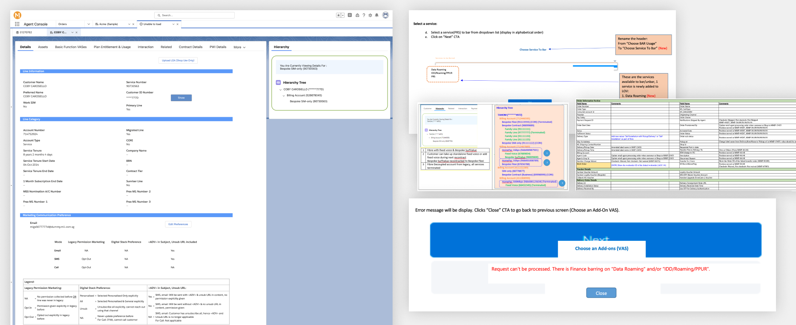
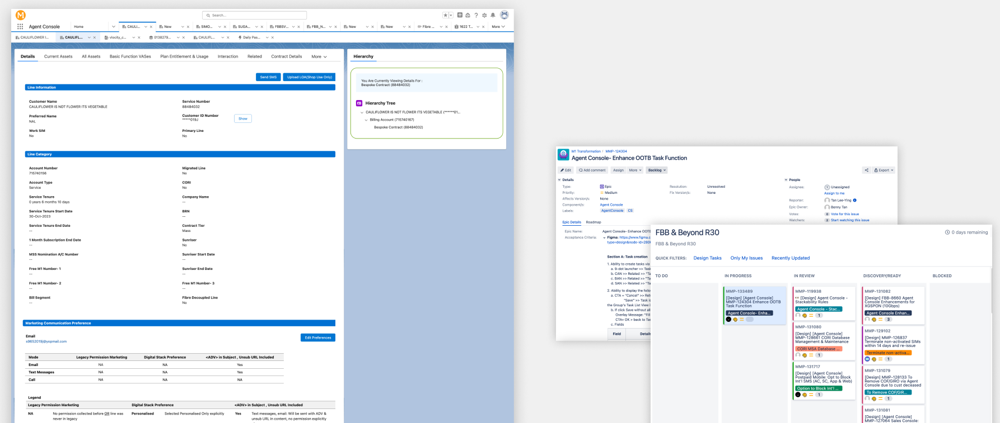

Case Study
Agent Console
Agent Console is a platform hosted on Salesforce. It is used by Customer Service Agents to help users who call through the hotline get their matters solved. Such matters includes, conduct winback, waiver, check bill, subscribe/unsubscribe to add-on services, raise a case, change any customer details, upload verification documents, and much more.
Everything that a customer does through My M1+ App, Web, and Sales Console (in shop) will be compiled into Agent Console.
Project Overview
Prior to my involvement with the Agent Console team, the Product Owners are the ones conducting the design changes manually by editing them in Word Document and Paint app to illustrate a change to the developers. By doing so, there are errors and design discrepancies, resulting in the inconsistent UI across the console.
I was assigned to the team as a designer to offload their design tasks so that the POs can focus on the product itself.
My Contribution
- Built and implemented the platform’s design system — M1’s first — enabling developers to ship consistent UI through a large–scale Fibre Broadband migration
- Created UI templated in Figma to speed up design process
- Successfully migrated and aligned the design for B2C, Fibre Broadband, and B2B onto Agent Console
- Set up Jira and Confluence board to better track new, on-going, and completed tickets for each sprint
Prior Designer Involved: Speed > Functionality
Workflows were defined using documents and traditional methods, prioritizing speed and cost over usability. This led to fragmented flows and inefficient interactions that did not align with how customer service agents actually worked.

After Designer Involved: Functionality > Aesthetics
I streamlined and restructured end-to-end workflows to better support agent tasks and decision-making. By redesigning the UI (within the constraints of an out-of-the-box Salesforce system) around real usage patterns, I improved efficiency in accessing customer information and resolving issues.
